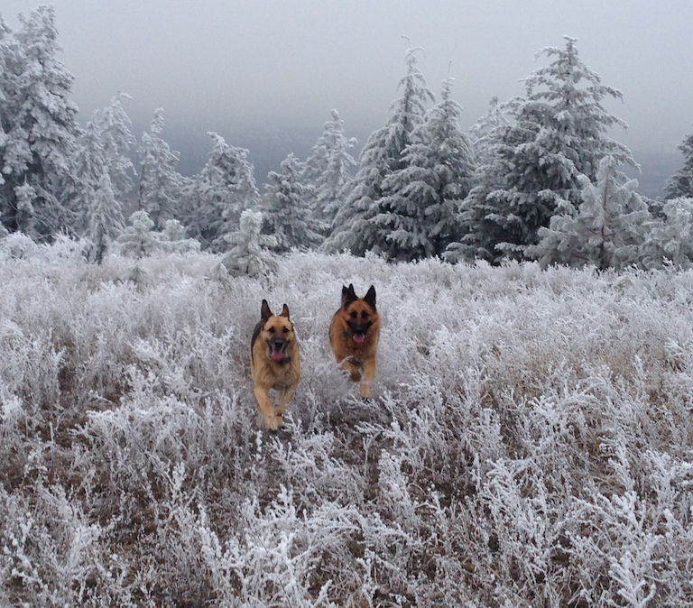
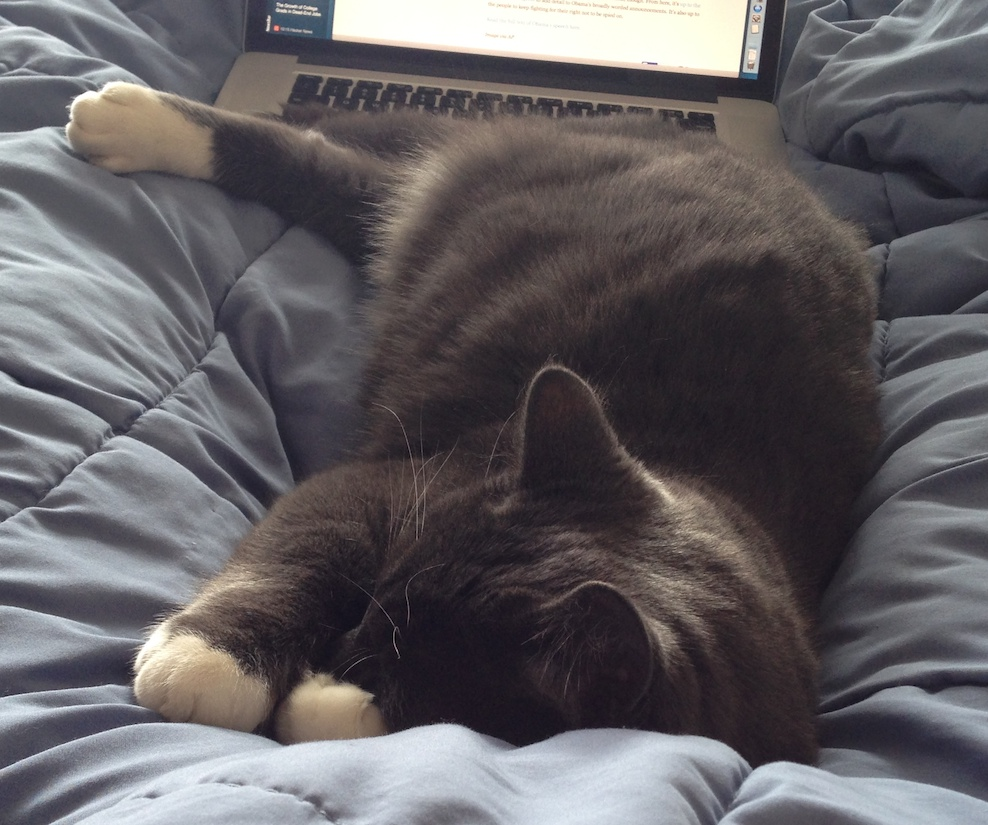

Kiki is the best kiki in the world. He allows you to pet his belly exactly two times before biting you. You should be grateful.
Kiki's Pawns
Here are the two pawns who lives with Kiki. They are extremely cute in their own right, but Kiki finds them smelly. They have to stay outside, but Kiki gets to do what he wants. Because he's Kiki.
Exactly how cute is Kiki?
Here is an picture of adorable Kiki sleeping adorably. He's so cute – the way he comes and falls asleep on top of you to grant you the opportunity to stop stressing about important work and stay completely still.
Who is Kiki?
Kiki is, simply put, the best kiki in the whole entire universe. He loves canned cat food and will be unsubtle about wanting it, because what Kiki wants, Kiki gets. He likes to chase reflections of light on the wall and jump onto them, just to keep in shape. He is very athletic and a master of stealth, bulleting out of one room into the other and hiding under the plants and chewing on them. He also favors cardboard boxes and shopping bags. His kingdom is in Spokane, Washington. I love him and I miss him.


© 2012 CuteKiki. All Rights Reserved.